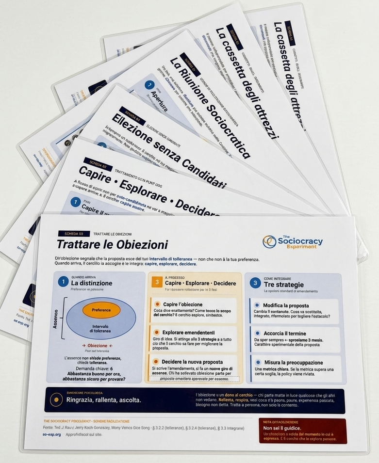

Le organizzazioni che ascoltano il feedback si riparano da sole.
Fonte: MVOS · §4.2 (creating change, effective feedback) · §4.6 (performance reviews) · §4.7 (self-repairing organizations)
La forma conta quanto il contenuto. La focus person parla prima, il cerchio risponde come alleato, la focus person sintetizza per ultima. Questo non è un dettaglio procedurale — è il meccanismo che rende il feedback trasformativo invece che difensivo.
Imposta il tono. «Cosa vorrei sentire? Cosa mi preoccupa del mio ruolo?» Si auto-osserva. Apre lo spazio per il feedback altrui.
Giro di parola. Gli altri parlano come alleati, non giudici. Osservazioni specifiche, esempi concreti, impatto — non etichette o giudizi.
Sintetizza ciò che ha sentito (non ciò che gli altri intendevano dire). Decide cosa portare via. Si appropria dell'apprendimento.
Questo ordine non è arbitrario. MVOS spiega che quando la focus person parla per prima, imposta il contesto in cui gli altri rispondono come alleati — non come valutatori. E quando parla per ultima, l'interpretazione resta sua: il cerchio ha condiviso osservazioni, ma non può decidere cosa la focus person debba farne.
Da celebrare. Specifico, con un esempio. Il messaggio implicito è: «continua, fai di più». MVOS è esplicito su questo: il feedback positivo non va dato per scontato — «il bene va detto». Non valorizzare le cose che funzionano è un modo silenzioso di smettere di farle funzionare.
Non è un difetto — è un gap tra aspettativa e realtà. Un bisogno non soddisfatto, non una colpa morale. MVOS usa il frame della Comunicazione Non Violenta: ciò che non ha funzionato è informazione su ciò che serve, non un giudizio sulla persona.
Una richiesta concreta, un esperimento a termine. Non «fai meglio» ma «proviamo X per 3 mesi». Il feedback non si chiude con una valutazione — si chiude con un piano.
MVOS dedica ampio spazio a questa domanda: cos'è il feedback che può davvero essere sentito?
Osservazione, non giudizio: «quando hai detto X» invece di «sei aggressivo/a». La prima descrive un fatto; la seconda attribuisce un'etichetta. Chi riceve un'etichetta smette di ascoltare.
Impatto, non intenzione: «quando questo succede, io sento...» invece di «hai fatto una cosa sbagliata». Il mio impatto è reale e verificabile; l'intenzione dell'altro non lo è (per me).
Richiesta, non esigenza: «mi aiuterebbe se...» invece di «devi fare». Una richiesta può ricevere un no — e questo è legittimo. Un'esigenza crea resistenza.
MVOS sottolinea che «solo quando il feedback è veramente sentito, sarà genuino ed efficace. Le persone hanno un radar finissimo e percepiscono il giudizio sotto qualsiasi parola, per quanto 'gentile' possa sembrare.»
Il processo di feedback sul ruolo in MVOS può avvenire come parte di una riunione normale, o come riunione dedicata — la performance review.
Lo decide la focus person: chi la conosce nel ruolo. MVOS suggerisce di includere persone da tutti i livelli gerarchici con cui la focus person interagisce. Per i ruoli di collegamento (coordinatore, delegato), includere membri di entrambi i cerchi coinvolti. Il gruppo deve essere gestibile, non necessariamente esaustivo.
La performance review segue lo stesso flusso di ogni punto OdG. → Scheda 02
Si parte dalla descrizione del ruolo e da eventuali report. Poi due giri:
Cosa ha fatto bene — la focus person parla per prima, poi gli altri, poi la focus person sintetizza.
Cosa avrebbe potuto fare diversamente — stesso ordine. MVOS nota che il fatto che la focus person parli per prima in questo giro «difficile» imposta il contesto in cui gli altri rispondono come alleati, non come accusatori».
Quali dimensioni vuole migliorare la focus person, o il cerchio vorrebbe che migliorasse? Non come — prima si identificano le aree, poi si generano le idee.
Un piano concreto con azioni e scadenze, approvato per assenso. Il feedback non si chiude con una valutazione — si chiude con un piano. → Per il processo di assenso: Scheda 03
MVOS introduce un concetto importante: il social-emotional debt. Ogni volta che qualcuno non riceve feedback su qualcosa che non ha funzionato — o che ha funzionato molto bene — si accumula un piccolo debito. Nel tempo, questo debito si materializza in sarcasticità, disimpegno, mancanza di accountability, lavoro «al minimo».
MVOS dice: chi dà feedback contribuisce al benessere dell'altra persona condividendo informazioni che le permettono di crescere. Chi non dà feedback — per timore di ferire, per imbarazzo, per evitare conflitti — non sta proteggendo nessuno: sta accumulando debito.
Il frame che cambia tutto: da giudizio a informazione. Da evento isolato a sistema. Da «questo non ha funzionato» a «questo è un dato che possiamo usare».
MVOS usa l'espressione «self-repairing organizations» per descrivere cosa diventa possibile quando il feedback è strutturale, non eccezionale. Quando il feedback è parte del sistema — nella performance review, nel feedback sulla riunione (→ Scheda 01), nel ciclo di policy — l'organizzazione impara a identificare e correggere i propri problemi prima che diventino crisi.
7 schede plastificate, formato A4, in una cartella.
Per chi facilita riunioni, gestisce transizioni di governance, o vuole tenere il metodo a portata di mano durante il lavoro.

Riceverai risposta entro 24h con istruzioni per il pagamento e la spedizione.